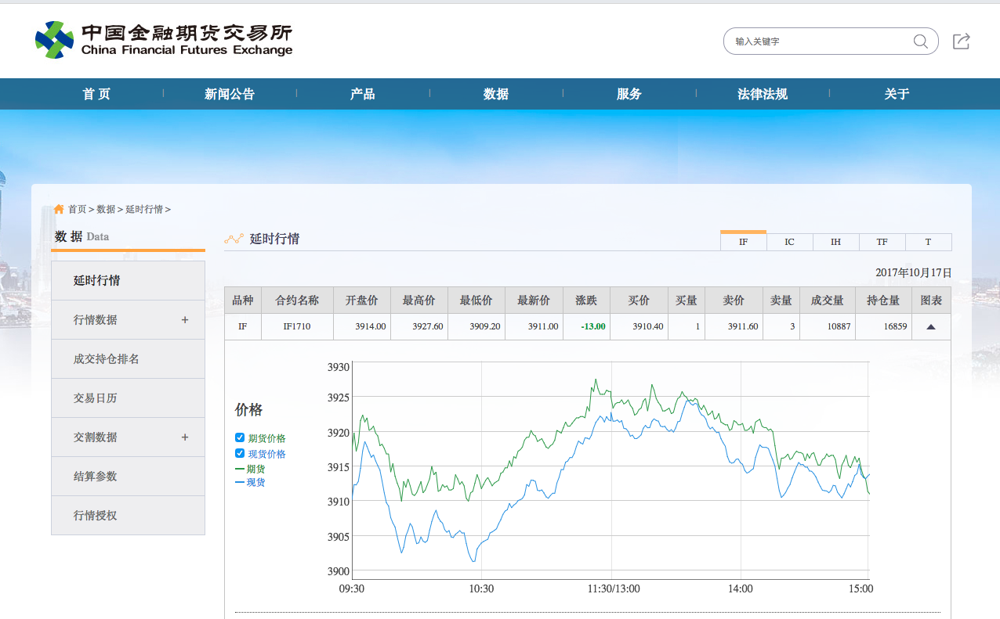
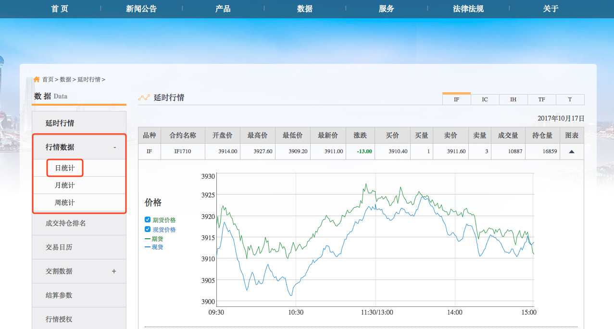
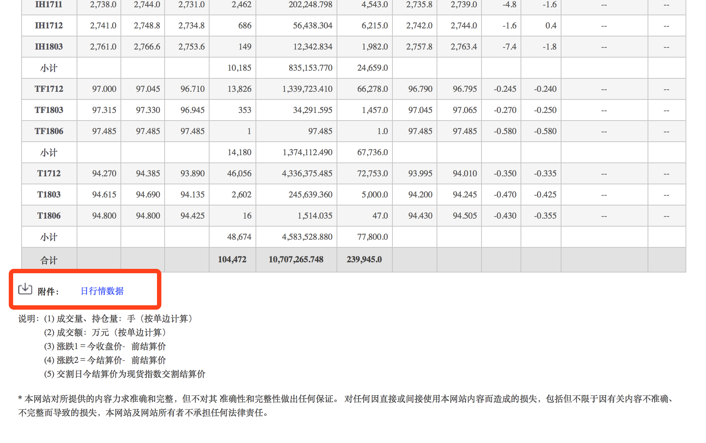
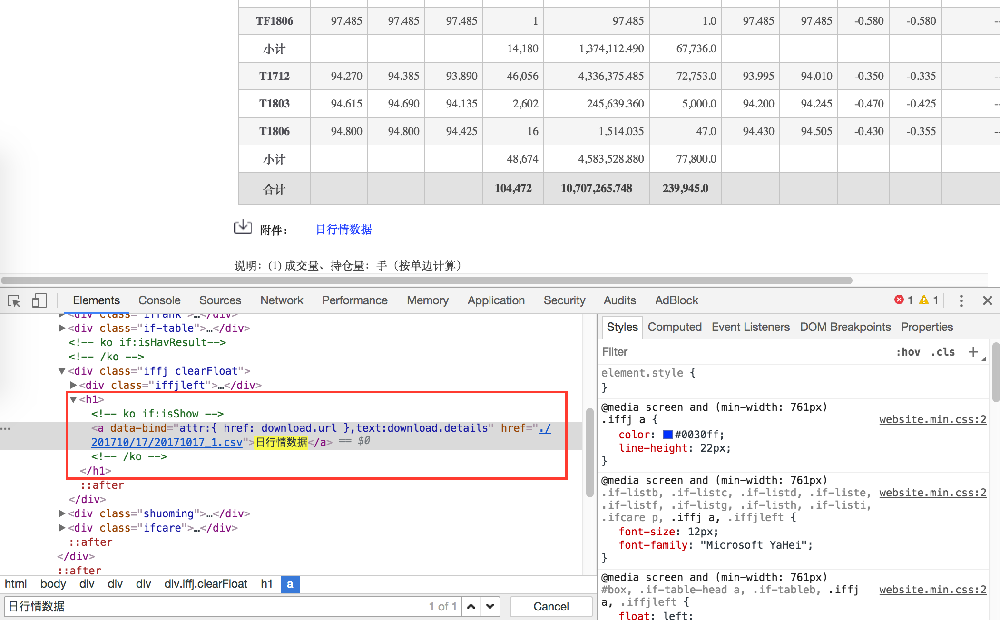
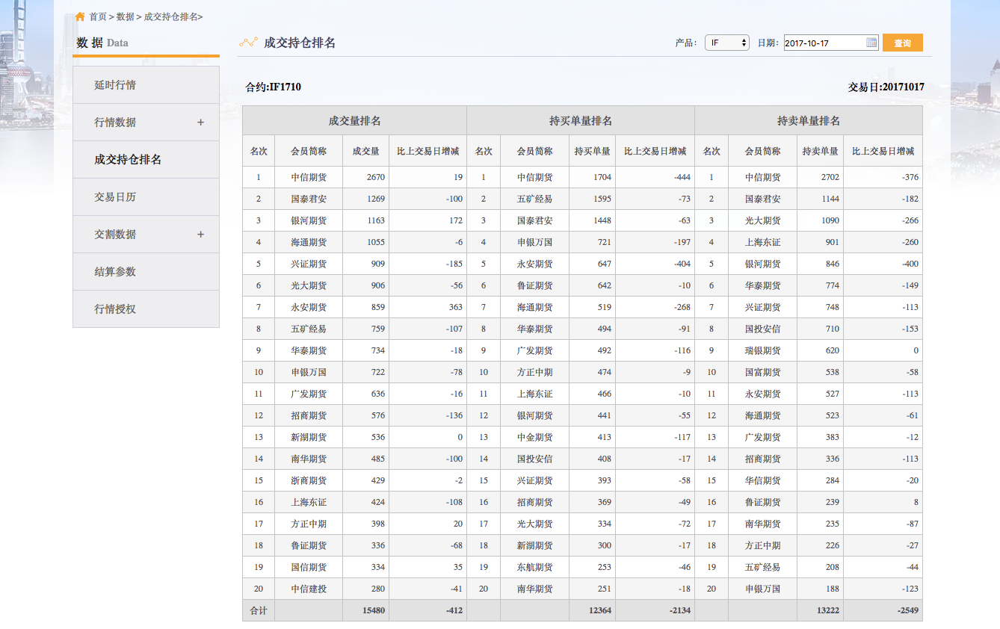
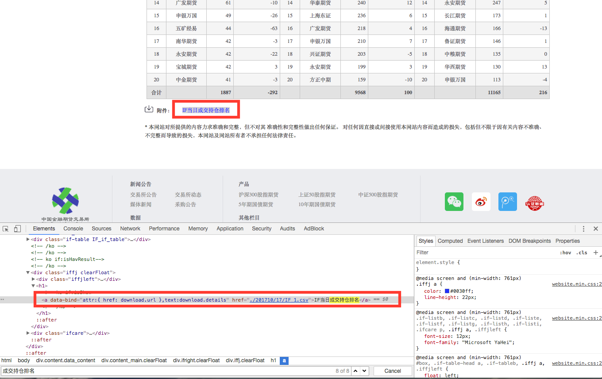

警告
本文最后更新于 2017-10-24，文中内容可能已过时。
针对中金所网站进行自动化网络爬虫，下载交易相关的数据，如日行情数据、期货公司持仓排名数据、仓单数据等。
中金所网站提供股指期货相关的重要数据
从中金所网站可以得到大量股指期货、国债以及国债期货相关的重要交易数据，如日行情数据、期货公司持仓排名数据、仓单数据等。 通过网络爬虫技术，我们可以下载得到历史的所有数据，为后期的量化建模与收益率回测提供数据支持。本篇文章讨论了
- 如何识别中金所网址，找到对应的数据文件链接
- 使用并行计算模式下载所有的历史数据文件
配置文件
配置文件位于 myInit.R，如果没有安装相关的软件包，我这里已经写好一个命令行，会自动启动安装程序。
1
2
3
4
5
6
7
8
9
10
11
12
13
14
15
16
|
################################################################################
## myInit.R
## 初始化设置
# __1. 账号、密码__
# 2. 文件路径
# 3. 需要的软件包
# __4. 参数设置__
################################################################################
## =============================================================================
pkgs <- c("data.table","parallel","downloader","magrittr")
##------------------------------------------------------------------------------
if(length(pkgs[!pkgs %in% installed.packages()]) != 0){
sapply(pkgs[!pkgs %in% installed.packages()], install.packages)
}
##------------------------------------------------------------------------------
sapply(pkgs, require, character.only = TRUE)
|
同时，我建议使用 Chrome 浏览器，并安装一款非常好用的HTML 页面解析插件 SelectGadget，可以用来探测网页元素，方便我们查找相应的路径。
日行情数据
中金所网站提供了所有股指期货的历史行情数据：
识别文件链接
为了找到行情数据对应的文件链接，我们首先点击左栏的 行情数据/日统计，得到当日收盘后统计的理日行情数据列表。
日行情数据所在
这里，我们可以有两种方法来下载得到数据
- 直接读取页面数据，但只适用获得当日的收盘日行情数据，对于历史的数据，则无法读取。
- 查找相关的文件链接，查看交易所是否提供了直接可下载的链接。一般而言，文件命令规则会与交易日期相关，从而满足我们下载历史数据的要求。
让我们把页面往下拽一拽，会有惊喜哦。
中金所提供了附件下载
这个链接即是中金所存储日行情数据的文件所在，可以直接点击下载。
当然，如果只是手动点击下载的话（估计右手要变残废），这么简单粗暴的手段，我们就不用在花费大力气来探讨了。
怎么去查找这个文件的具体链接地址呢？我们现在只是看到一个网页页面，似乎无从下手。如果就这样轻易放弃，那也太不是我的风格了。幸好，我对网页设计也是有所了解，也独立搭建过个人博客（包括但不限于本博客网站），其实这个看似页面的“东西”，后面隐藏了许多我们看不到的“东西”。
这里我使用 Chrome，可以右击鼠标，选择 Inspect，会弹出网页的具体元素。有没有被惊喜到？原来我们看见的网站页面，竟然是有这样一对代码组合而成的。使用 Ctrl + F 查找关键字 日行情数据，我们发现，原来这个文件确实指向了一个具体的链接地址。
查看HTML元素
对于链接地址，一般有两种形式
- 静态链接：即链接指向一个相对路径，这个路径是显式的。比如我们在上面看到的链接，显示一个相对根目录的相对路径，
href="./201710/17/20171017_1.csv"，文件路径是显式、具体的。我们可以直接在浏览器打开这个文件来查看，或者使用 R 直接读取文件数据。
- 动态链接：即由一段
Javascript 来控制操作，只有鼠标点击才能进行下一步的操作如下载。对于这类链接的解析，我们需要使用脚本解析或者模拟鼠标操作（我会在另外一篇博客讨论如何使用 Selenium 模拟鼠标下载大商所的数据）。
如此一来，我们便知道需要下载的文件链接全称是
根目录：http://www.cffex.com.cn/sj/hqsj/rtj相对路径：/201710/17/20171017_1.csv
文件命名规则
文件的命令规律果然是以交易日为基础，在上面稍作变动，即 /yyyymm/dd/yyyymmdd_1.csv。对于历史的数据，我们只要使用循环来编写后面的相对文件路径，即可获取所有的历史数据文件所对应的网页链接。
这里我使用到了之前介绍的中国期货交易日历表，使用这个日历表来生成相应的文件路径。
行情数据
我们先来看看现实是不是真是如我们所预想的，包含所有的行情数据。首先来读取某一天的数据文件看看
1
|
Sys.setlocale("LC_ALL", 'en_US.UTF-8')
|
1
|
[1] "LC_CTYPE=en_US.UTF-8;LC_NUMERIC=C;LC_TIME=en_US.UTF-8;LC_COLLATE=en_US.UTF-8;LC_MONETARY=en_US.UTF-8;LC_MESSAGES=en_US.UTF-8;LC_PAPER=zh_CN.UTF-8;LC_NAME=C;LC_ADDRESS=C;LC_TELEPHONE=C;LC_MEASUREMENT=zh_CN.UTF-8;LC_IDENTIFICATION=C"
|
1
2
3
4
5
6
7
8
|
library(magrittr)
library(readr)
exchURL <- 'http://www.cffex.com.cn/sj/hqsj/rtj'
tempURL <- '/201710/17/20171017_1.csv'
dataFile <- paste(exchURL, tempURL, sep = '')
dt <- dataFile %>% read_csv(., locale = locale(encoding = "GB18030"))
|
1
2
3
4
5
6
7
8
9
10
11
12
13
14
15
16
17
18
|
Parsed with column specification:
cols(
合约代码 = col_character(),
今开盘 = col_double(),
最高价 = col_double(),
最低价 = col_double(),
成交量 = col_double(),
成交金额 = col_double(),
持仓量 = col_double(),
持仓变化 = col_double(),
今收盘 = col_double(),
今结算 = col_double(),
前结算 = col_double(),
涨跌1 = col_double(),
涨跌2 = col_double(),
`隐含波动率(%)` = col_character(),
Delta = col_character()
)
|
1
2
3
4
5
6
7
8
9
|
Warning: 6 parsing failures.
row col expected actual file
5 -- 15 columns 14 columns 'http://www.cffex.com.cn/sj/hqsj/rtj/201710/17/20171017_1.csv'
10 -- 15 columns 14 columns 'http://www.cffex.com.cn/sj/hqsj/rtj/201710/17/20171017_1.csv'
15 -- 15 columns 14 columns 'http://www.cffex.com.cn/sj/hqsj/rtj/201710/17/20171017_1.csv'
19 -- 15 columns 14 columns 'http://www.cffex.com.cn/sj/hqsj/rtj/201710/17/20171017_1.csv'
23 -- 15 columns 14 columns 'http://www.cffex.com.cn/sj/hqsj/rtj/201710/17/20171017_1.csv'
... ... .......... .......... ..............................................................
See problems(...) for more details.
|
1
2
3
4
5
6
7
8
9
10
11
12
13
14
|
# A tibble: 24 × 15
合约代码 今开盘 最高价 最低价 成交量 成交金额 持仓量 持仓变化 今收盘 今结算 前结算 涨跌1 涨跌2 `隐含波动率(%)` Delta
<chr> <dbl> <dbl> <dbl> <dbl> <dbl> <dbl> <dbl> <dbl> <dbl> <dbl> <dbl> <dbl> <chr> <chr>
1 IC1710 6600 6653. 6584. 10644 1407964. 13681 -2199 6592. 6604. 6628. -35.8 -23.4 -- --
2 IC1711 6568. 6618 6553. 3270 430422. 6064 1692 6561. 6571. 6597. -36.6 -26 -- --
3 IC1712 6544 6597. 6523. 1041 136429. 7769 236 6531 6542 6572. -41.2 -30.2 -- --
4 IC1803 6489 6525. 6463. 277 35942. 2124 55 6470 6480. 6511. -40.8 -30.4 -- --
5 小计 NA NA NA 15232 2010756. 29638 -216 NA NA NA NA NA <NA> <NA>
6 IF1710 3914 3928. 3909. 10887 1279659. 16859 -3096 3911 3917. 3924 -13 -7.4 -- --
7 IF1711 3913 3925 3906 3723 437320. 7226 2224 3906 3913 3922. -15.6 -8.6 -- --
8 IF1712 3911 3923. 3904 1293 151760. 12518 170 3906 3910. 3919. -13.2 -8.8 -- --
9 IF1803 3918. 3923 3904. 298 34976. 3509 10 3907. 3911 3920. -13.2 -8.8 -- --
10 小计 NA NA NA 16201 1903714. 40112 -692 NA NA NA NA NA <NA> <NA>
# … with 14 more rows
|
并行下载
哦科，到此为止，所有的材料已经准备完毕：
- 使用交易日历表生成相对路径，并与根目录结合，生成所有的历史日行情数据文件链接
- 读取的文件确认为目标数据
接下来，我们只需要打开 R 中的并行计算模式，即可开启下载中金所所有的日行情数据了。
dataPath 是下载文件的保存路径，根据需要来修改- 可以根据操作系统的性能不同，设置开启的并行计算核数，使用命令
detectCores() 来获取当前操作系统的最大 CPU 核数
- 我使用的是
Linux 操作系统，在该操作系统下，parallel 开启 FORK 并行计算模式，能够增强性能。如果是在 Windows 操作系统，需要开启 PSOCK 模式，同时记得在工作区添加软件包与变量
download.file 有一个参数 mode，在 Linux 操作系统休不需要设置，当时在 Windows 操作系统下需要设置为 wb， 否则保存的文件是空的。我这里为了跨平台使用，统一设置为 wb- 运行完成后，记得使用命令
stopCluster() 关闭并行模式，否则后续的运算会比较占用资源
1
2
3
4
5
6
7
8
9
10
11
12
13
14
15
16
17
18
19
20
21
22
23
24
25
26
27
28
29
30
31
32
33
34
35
36
|
################################################################################
## STEP 1: 获取对应的交易日期
################################################################################
ChinaFuturesCalendar <- fread("./data/ChinaFuturesCalendar/ChinaFuturesCalendar.csv",
colClasses = list(character = c("nights","days"))) %>%
.[days < format(Sys.Date(),'%Y%m%d')]
exchCalendar <- ChinaFuturesCalendar[,":="(calendarYear = substr(days,1,4),
calendarYearMonth = substr(days,1,6),
calendarDay = substr(days,7,8))]
exchURL <- "http://www.cffex.com.cn/sj/hqsj/rtj/"
dataPath <- '/home/william/Documents/Exchange/CFFEX/'
# dataPath <- "./data/Bar/Exchange/CFFEX/"
################################################################################
################################################################################
## STEP 2: 开启并行计算模式，下载数据
################################################################################
cl <- makeCluster(round(detectCores()/4), type='FORK')
parSapply(cl, 1:nrow(ChinaFuturesCalendar), function(i){
tempDir <- paste0(dataPath,exchCalendar[i,calendarYear])
if (!dir.exists(tempDir)) dir.create(tempDir)
tempURL <- paste0(exchURL, exchCalendar[i,calendarYearMonth],'/',
exchCalendar[i,calendarDay],'/',
exchCalendar[i,days],'_1.csv')
destFile <- paste0(tempDir,'/',exchCalendar[i,days],'.csv')
while ( !file.exists(destFile) | file.size(destFile) < 200) {
try(download.file(tempURL, destFile, mode = 'wb'))
}
})
stopCluster(cl)
|
成交持仓排名
利用相同的技术手段，我们也可以从中金所网站下载当日收盘后的期货公司成交持仓排名数据。这份数据包含了成交量与当日收盘后持仓排名前20的期货公司详细数据。通过分析持仓数量变动，我们可以挖掘到各个期货公司主力资金对市场走势的情绪判断，从而对未来的期货价格走势产生一定的影响。
中金所在每日收盘后公布成交排名
识别文件链接
我们点击某一天的交易日期，然后点击查询，即可看到当日的各股指期货品种的成交持仓排名数据。
显示排名前20的期货公司成交数据
参考日行情部分的方法，我们使用 Chrome 的 Inspect 功能来解析数据文件所对应的链接。可以看到，成交持仓排名的数据文件命名规则是 yyyymm/dd/<id>_1.csv，其中 id 就是合约品种代码。如此一来，我们也是可以利用中国期货交易日历来生成所有的历史文件对应的网站链接。
查看数据文件的相对链接路径
与日行情数据不同，成交持仓排名的数据是分合约品种来设定的，即每一个合约品种单独保存为一个数据文件。由于不同的股指期货品种上市日期不一样，这里我们需要单独设置。
1
2
3
4
5
6
7
8
9
10
11
12
13
14
15
16
17
18
19
20
|
################################################################################
## CFFEX: 中期所
##
## 1. IC：中证500 --> 2015-04-16
## 2. IF：沪深300 --> 2010-04-16
## 3. IH：上证50 --> 2015-04-16
## 4. T ：10年期国债 --> 2015-03-20
## 5. TF：5年期国债 --> 2013-09-06
################################################################################
## -----------------------------------------------------------------------------
productSet <- data.table(productID = c('IC','IF','IH','T','TF'),
startDate = c('20150416','20100416','20150416',
'20150320','20130906'))
productCalenar <- lapply(productSet[,productID], function(id) {
res <- exchCalendar[days >= productSet[productID == id, startDate]] %>%
.[, productID := id]
}) %>% rbindlist()
## -----------------------------------------------------------------------------
|
成交持仓排名数据
我们来检查一下数据是不是正确的。
1
2
3
4
5
6
7
|
exchURL <- 'http://www.cffex.com.cn/sj/ccpm'
tempURL <- '/201710/17/IF_1.csv'
dataFile <- paste(exchURL, tempURL, sep = '')
dt <- dataFile %>% read_csv(., locale = locale(encoding = "GB18030"))
print(dt)
|
1
2
3
4
5
6
7
8
9
10
11
12
13
14
|
# A tibble: 46 × 9
交易日 合约 会员类别 总成交量 比上交易日增减 总持买单量 比上交易日增减_1 总持卖单量 比上一交易日增减
<chr> <chr> <chr> <chr> <chr> <chr> <chr> <chr> <chr>
1 20171017 IF1710 期货公司 21774 -1166 16859 -3096 16859 -3096
2 20171017 IF1710 非期货公司 0 0 0 0 0 0
3 20171017 IF1712 期货公司 2586 -530 12518 170 12518 170
4 20171017 IF1712 非期货公司 0 0 0 0 0 0
5 交易日 合约 排名 成交量排名 <NA> <NA> 持买单量排名 <NA> <NA>
6 <NA> <NA> <NA> 会员简称 成交量 比上一交易日增减 会员简称 持买单量 比上一交易日增减
7 20171017 IF1710 1 中信期货 2670 19 中信期货 1704 -444
8 20171017 IF1710 2 国泰君安 1269 -100 五矿经易 1595 -73
9 20171017 IF1710 3 银河期货 1163 172 国泰君安 1448 -63
10 20171017 IF1710 4 海通期货 1055 -6 申银万国 721 -197
# … with 36 more rows
|
并行下载
具体的说明参照日行情的并行下载说明。这里直接上干货。
1
2
3
4
5
6
7
8
9
10
11
12
13
14
15
16
17
18
19
20
21
22
23
24
25
26
27
28
29
30
31
32
33
34
35
36
37
38
39
40
41
42
43
44
45
46
47
48
49
50
51
52
53
54
55
56
57
58
59
60
61
62
63
64
65
66
67
68
69
70
71
72
73
74
75
76
77
78
79
80
81
82
83
84
85
86
87
|
################################################################################
## cffex.R
## 用于下载中金所期货公司持仓排名数据
##
## Author: William Fang
## Date : 2017-08-21
################################################################################
################################################################################
## STEP 0: 初始化，载入包，设定初始条件
################################################################################
rm(list = ls())
logMainScript <- c("cffex.R")
setwd('/home/fl/myData/')
suppressMessages({
source('./R/Rconfig/myInit.R')
})
################################################################################
## STEP 1: 获取对应的交易日期
################################################################################
ChinaFuturesCalendar <- fread("./data/ChinaFuturesCalendar/ChinaFuturesCalendar.csv",
colClasses = list(character = c("nights","days"))) %>%
.[days < format(Sys.Date(),'%Y%m%d')]
exchCalendar <- ChinaFuturesCalendar[,":="(calendarYear = substr(days,1,4),
calendarYearMonth = substr(days,1,6),
calendarMonth = substr(days,5,6),
calendarDay = substr(days,7,8))]
exchURL <- "http://www.cffex.com.cn/fzjy/ccpm/"
dataPath <- '/home/william/Documents/oiRank/CFFEX/'
# dataPath <- "./data/oiRank/CFFEX/"
################################################################################
## CFFEX: 中期所
##
## 1. IC：中证500 --> 2015-04-16
## 2. IF：沪深300 --> 2010-04-16
## 3. IH：上证50 --> 2015-04-16
## 4. T ：10年期国债 --> 2015-03-20
## 5. TF：5年期国债 --> 2013-09-06
################################################################################
## -----------------------------------------------------------------------------
productSet <- data.table(productID = c('IC','IF','IH','T','TF'),
startDate = c('20150416','20100416','20150416',
'20150320','20130906'))
productCalenar <- lapply(productSet[,productID], function(id) {
res <- exchCalendar[days >= productSet[productID == id, startDate]] %>%
.[, productID := id]
}) %>% rbindlist()
## -----------------------------------------------------------------------------
## -----------------------------------------------------------------------------
cffexData <- function(calendarYear, calendarMonth, calendarDay, productID) {
tempURL <- paste0(exchURL, paste0(calendarYear, calendarMonth), '/', calendarDay, '/',
productID,'_1.csv')
destFile <- paste0(dataPath, calendarYear, '/',
paste0(calendarYear, calendarMonth, calendarDay),
'_',productID,'.csv')
## -------------------------------------------------------------------------
while(! file.exists(destFile) | file.size(destFile) < 1000){
try(download.file(tempURL, destFile, mode = 'wb'))
}
## -------------------------------------------------------------------------
}
## -----------------------------------------------------------------------------
################################################################################
## STEP 2: 开启并行计算模式，下载数据
################################################################################
cl <- makeCluster(max(round(detectCores()*3/4),4), type='FORK')
parSapply(cl, 1:nrow(productCalenar), function(i){
## ---------------------------------------------------------------------------
tempDir <- paste0(dataPath, productCalenar[i, calendarYear])
if (!dir.exists(tempDir)) dir.create(tempDir, recursive = TRUE)
productCalenar[i, cffexData(calendarYear, calendarMonth, calendarDay, productID)]
## ---------------------------------------------------------------------------
})
stopCluster(cl)
|
 william 收录于 Data
william 收录于 Data{kind=link}
{kind=link}
{kind=link}
{kind=link}
{kind=link}
{kind=link}
{kind=link}
 支付宝
支付宝
 微信
微信